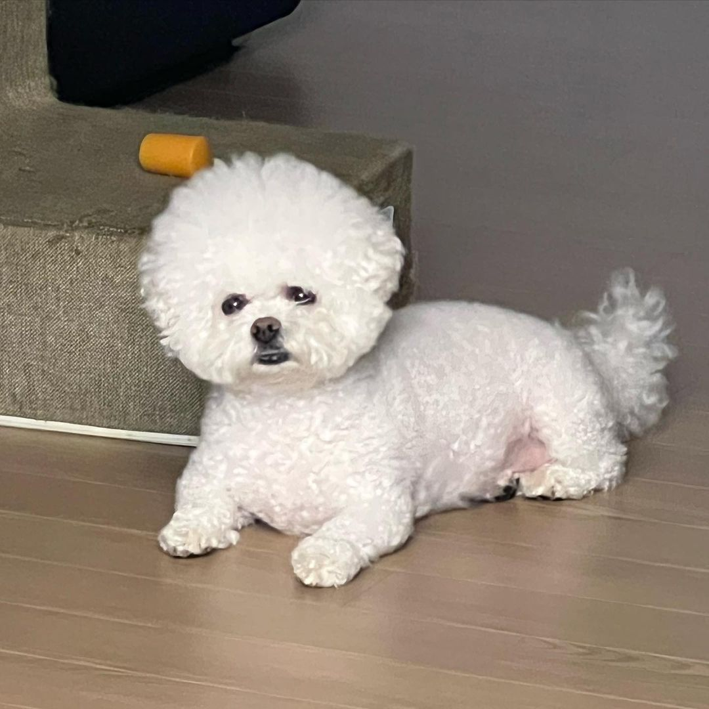

About
Hello! His name is Bobpul.
Bobpul was born on March, 19 2017. He is a Maltese and she has pretty white fur. He like playing around and eat many food. His favorite food is meat and some dog snack. The Maltese is gentle, affectionate, intelligent, responsive and trusting. Bobpul are lively, playful, vigorous, and enjoys learning tricks. The petite build of Bobpul belies its fearless presence.
